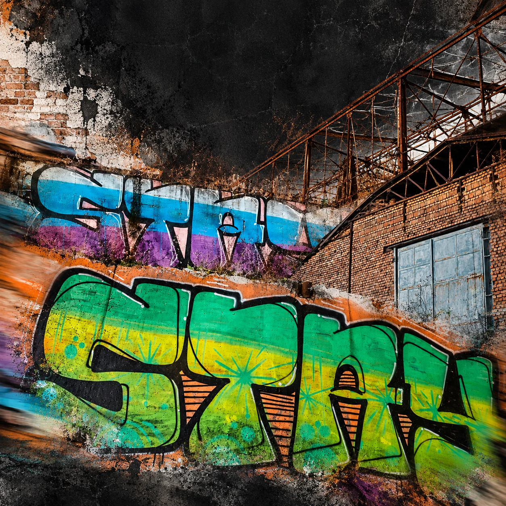

KontaktProstor pro vaše otázky
POJĎME ROZVÍJET
YEZEDO.
Místo pro váš další krok.
Poptávka / dotaz
NAPIŠTE NÁM.
Ať hledáte prostor pro firmu, zvažujete investici, nebo máte jako občan dotaz, ozveme se vám.
Libor Balga / starosta obce Kostice
AREÁL
Yezedo Kostice / Kostice, okres Břeclav
DATOVÁ SCHRÁNKA
2zybdgu
GPS
48°45'5.08″N / 16°58'9.458″E
Ke stažení
CELÝ PŘÍBĚH.
V JEDNÉ BROŽUŘE.
Vize, architektura a možnosti rozvoje areálu Yezedo přehledně ke stažení.

Brožura YEZEDO PDF / 3,3 MB Stáhnout ↓ Dokumentace a nabídka hal